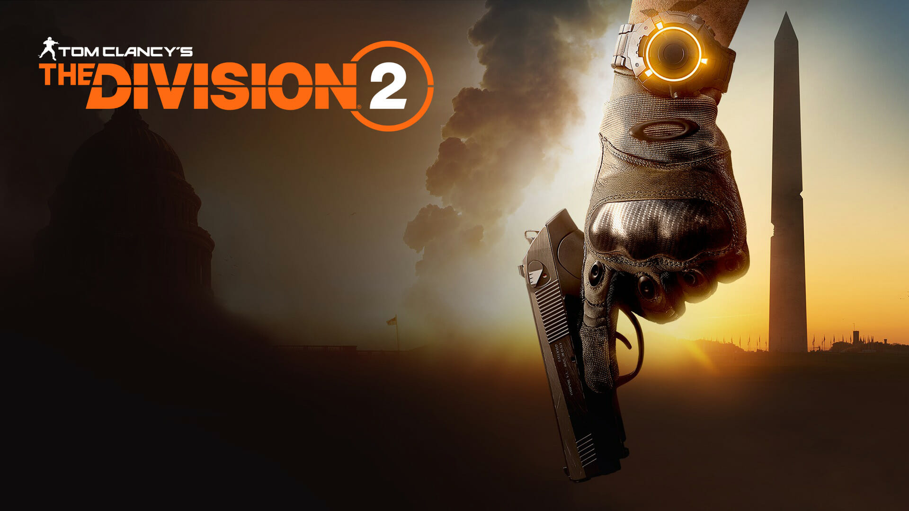
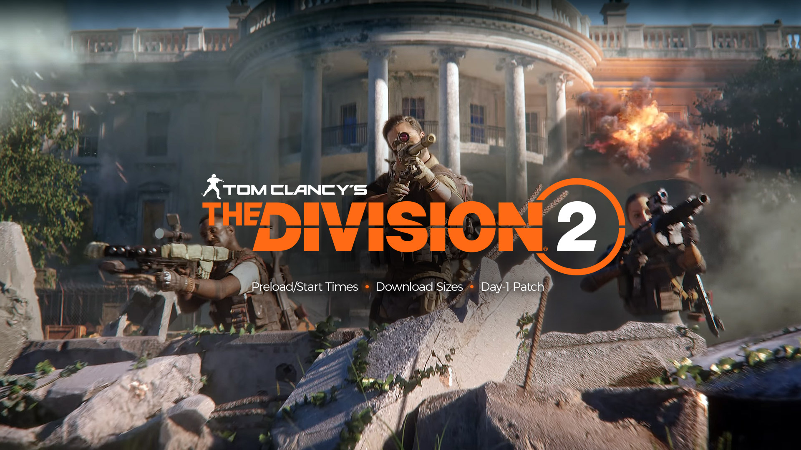

Un proyecyo desarrollado por Ubisoft
Ambientado siete meses después de la liberación del mortal virus que asoló la ciudad de Nueva York, The Division 2 pone las cosas difíciles a los jugadores al situarles en un Washington D. C. desmoronado y en pleno colapso, en una recreación al milímetro de la ciudad real. Tras el devastador virus, las tormentas, las inundaciones y el caos que siguieron han transformado la ciudad de manera radical. Entre zonas urbanas inundadas y lugares históricos devastados, los jugadores se sumergirán en un mundo abierto lleno de dinamismo y con una enorme variedad de entornos y ecosistemas. Como agentes veteranos de The Division, los jugadores son la última esperanza para evitar el completo derrumbe de la sociedad, mientras grupos diferentes de enemigos pugnan por controlar la ciudad. Si se pierde Washington D.C., la nación de los Estados Unidos entera estará perdida.
En Warlords of New York, los agentes de The Division se lanzan a la caza definitiva de Aaron Keener, un antiguo agente convertido ahora en renegado. Keener, secundado por sus lugartenientes, también agentes renegados, se ha convertido en una gran amenaza para el incipiente renacimiento de la civilización. Si quieren localizar a Keener, los agentes deberán recorrer el indómito mundo abierto del Bajo Manhattan, una antigua Zona Oscura con la que se cebó hace poco un espectacular huracán, que golpeó Nueva York con más virulencia que en ningún otro lugar del país. Se les encomienda a los jugadores explorar nuevas zonas, cada una con sitios emblemáticos tales como Dos Puentes, Chinatown, o Wall Street. Para llegar hasta Keener, los jugadores deben liquidar antes a sus fieles renegados. Cada uno de ellos tiene su propia historia, y también una habilidad específica, que el jugador conseguirá una vez acabe con ellos.